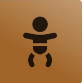
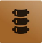
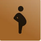

Osteopata certificata
Adattate alle tue esigenze
Dalle prime sedute
Facile da raggiungere

Pediatria
Dolori del rachide
Donne in gravidanzaSoffri di dolore alla schiena, tensioni cervicali o lombari, rigidità o blocchi nei movimenti? Questi disturbi possono essere legati allo stress, alla postura o a movimenti ripetitivi. L’osteopatia aiuta a ridurre le tensioni, migliorare la mobilità e alleviare il dolore in modo naturale e duraturo.
Stress, stanchezza, tensioni nel corpo, disturbi digestivi o cambiamenti legati alla gravidanza… Il corpo femminile attraversa molte fasi e adattamenti. L’osteopatia offre un approccio delicato e globale per rilassare il corpo, calmare il sistema nervoso e ritrovare equilibrio e benessere.
Il tuo bambino piange spesso, ha difficoltà a dormire o problemi digestivi? Dopo la nascita possono essere presenti piccole tensioni che influenzano il suo benessere. L’osteopatia pediatrica, dolce e sicura, aiuta a ridurre questi disagi e a favorire uno sviluppo armonioso.